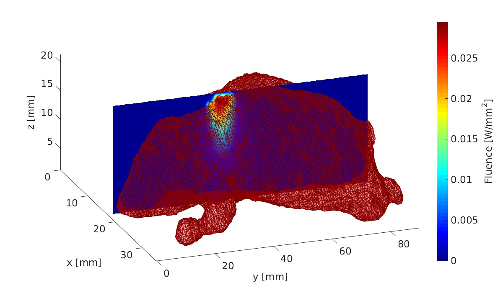

|
IntroductionValoMC is an open source Monte Carlo code that can simulate the passage of visible and near infrared range photons through matter. The implementation follows the Monte Carlo model by Prahl et al., Proc. SPIE, 5, 102-111 (1989) and later developments. The simulation geometry is defined using triangular or tetrahedral meshes. The model solves for boundary and volumetric data and supports various boundary conditions, types of light sources, as well as intensity modulated light. While the model is capable of simulating complex measurement geometries, attention is given to ease of use and fast problem set up with a MATLAB (TM) interface. The simulation code is written in C++ and parallelized using OpenMP. |
 Simulation using the digimouse model. Model data is described in B. Dogdas, D. Stout, A. Chatziioannou, RM Leahy, Digimouse: A 3D Whole Body Mouse Atlas from CT and Cryosection Data, Phys. Med. Bio, 52: 577-587, 2007 |
Minimal exampleThe following MATLAB code snippet sets up and runs a Monte Carlo simulation in a rectangular region xsize = 10; % width of the region [mm] ysize = 10; % height of the region [mm] dh = 1; % discretisation size [mm] vmcmesh = createRectangularMesh(xsize, ysize, dh); % Create a light source % - Set a light source from boundary elements 4 to 7 % - Photons are launched at a random angle so that all angles have a cosinic distribution vmcboundary.lightsource(4:7) = {'cosinic'}; % Give optical parameters % - Constant optical parameters are set troughout the medium. % - Alternatively, optical parameters can set be for each element using indexing vmcmedium.absorption_coefficient = 0.01; % [1/mm] vmcmedium.scattering_coefficient = 1.0; % [1/mm] vmcmedium.scattering_anisotropy = 0.9; % anisotropy parameter g [unitless] vmcmedium.refractive_index = 1.3; % refractive index [unitless] % Run the Monte Carlo simulation solution = ValoMC(vmcmesh, vmcmedium, vmcboundary); % Plot the solution using MATLAB patch('Faces',vmcmesh.H,'Vertices',vmcmesh.r,'FaceVertexCData', solution.element_fluence, 'FaceColor', 'flat', 'LineWidth',1.5); |

|
News28.5.2018: Beta-release We are releasing the beta version for test use and feedback. Please note that the functionality might still change and that the code might not be fully forward compatible with later releases. |